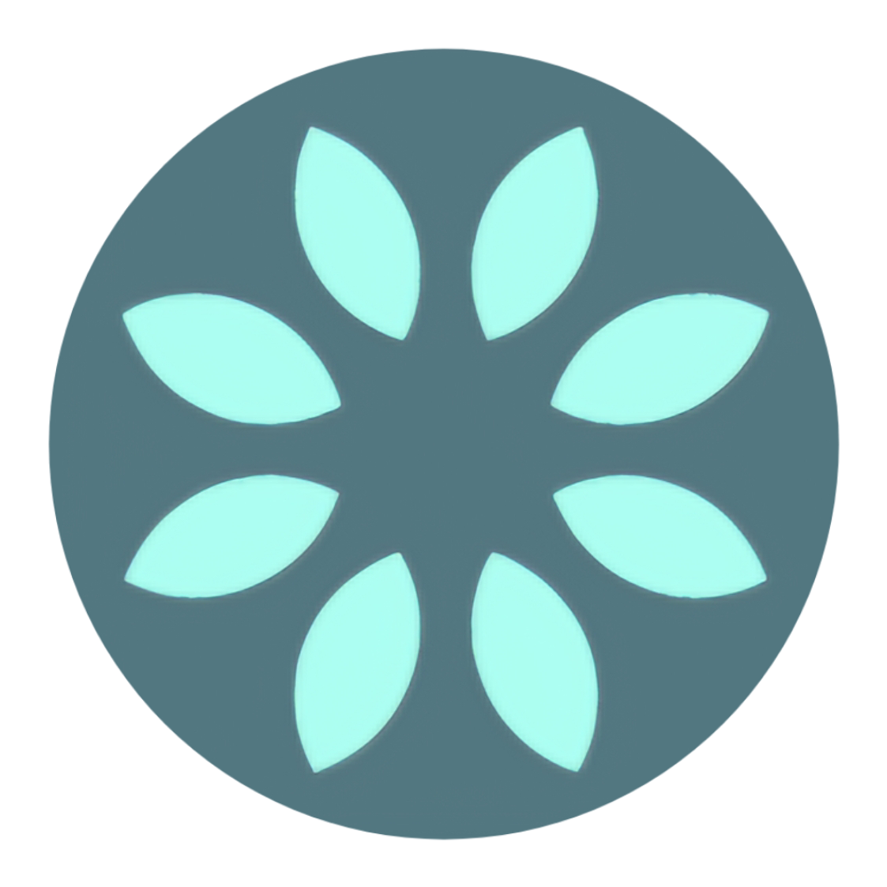
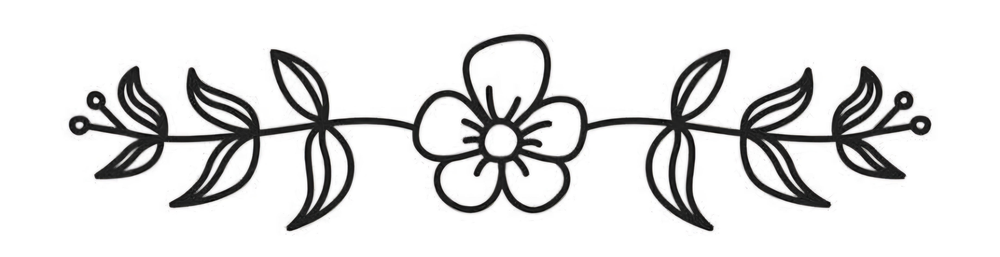

Chair Chi
Mindfulness
Mindful Movement with Chair support, based on Gentle Chi forms.
Focusing on Calm Breathing techniques with a touch of Relaxing Meditation.
What is Chair Chi?
Chair Chi is a guided & gentle movement exercise program that is chair based & chair supported, following Physio Chi & Ai Chi forms.
Incorporating calm breathing techniques, with a touch of relaxing meditation.
Instructed & supported by a trained Allied Health professional,
all poses can be altered or adjusted to suit your individual circumstances.
Embracing the moment & reminding ourselves to listen, to see, to feel,
to hear & to enjoy the silence.
Be Positively Empowered by the way our bodies move, encouraging mobility, soft flexibility & gentle strengthening.
Low impact & suitable for most ages.
Our Skills
Physio Chi Leader Workshops, to instruct & run Physio-Chi classes.
What is Physio-Chi?
Physio-Chi is a modified movement of traditional Tai Chi. It is easier to learn & suitable for those who are unable to stand for long periods as required by traditional forms of Tai Chi. It doesn't involve pivoting or twisting on the feet or require prolonged knee flexion (bent knees) & thus is particularly suitable for those with arthritis. People who cannot stand at all can still enjoy & perform a seated version of Physio-Chi. Participants are not required to perfect movements & thus progress quicker.

Leader Workshop to instruct & run Ai Chi water & land-based classes.
What is Ai Chi?
Ai Chi is a water movement & relaxation program that combines elements of Tai-Chi and Qi Gong concepts, with Watsu techniques. Ai Chi is a total body relaxation & strengthening progression used for aquatic therapy. The program involves a series of movements performed in a slow, focused manner & accompanied by deep breathing. It is usually practiced standing in shoulder-depth water in group classes. Ai Chi requires no equipment & allows the hair & face to stay dry.
Watsu is an extremely gentle form of therapeutic massage conducted in warm water, combining elements of Zen Shiatsu massage techniques, including muscle stretching joint mobilisation & movements.
Previous experience as a student in Tai Chi gaining knowledge of the Traditional Tai Chi Sword Form
Movement, as well as the "moving meditation" consisting of its 108 moves that are all in motion.
Managing Falls in the Community Interactive Workshop – National Ageing Research Institute.
With over 20 years of experience of working in the Allied Health industry, specialising in
rehabilitation in both Gym & Hydrotherapy settings.
Currently running a chair-based Chi program twice a week at local
rehabilitation facility.
Practising Chi, Not Perfect Chi
All classes are perfect for those with injuries or conditions that make it difficult to participate in other types of Beginner classes.
Chair based & chair support exercise classes, at Lara Physio in the Geelong region.